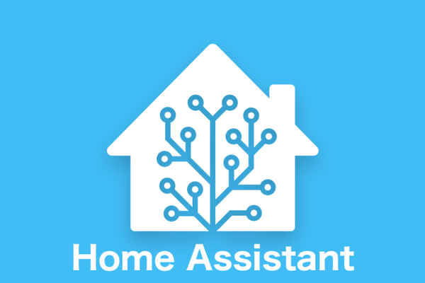
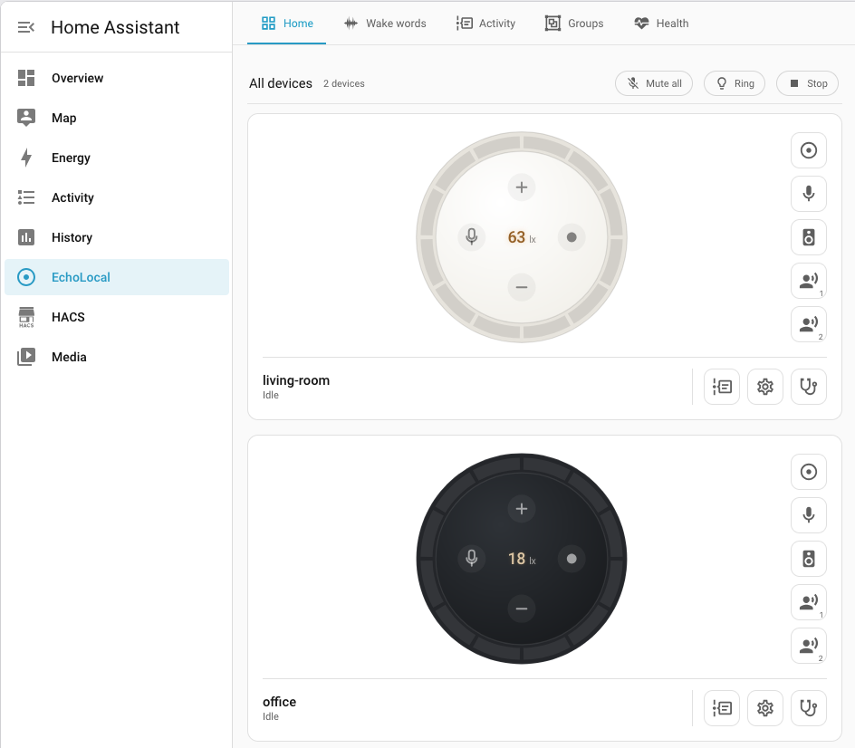
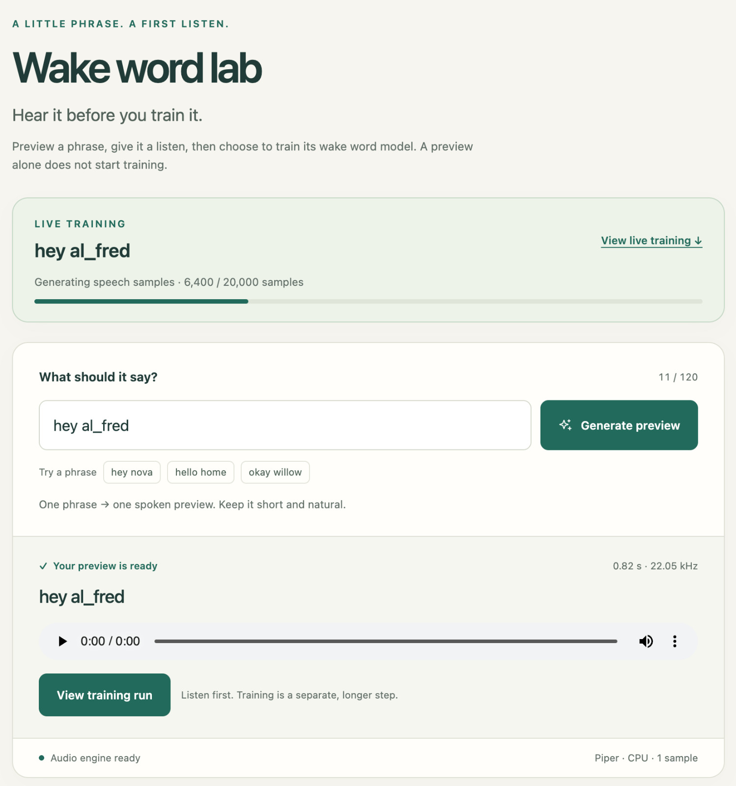
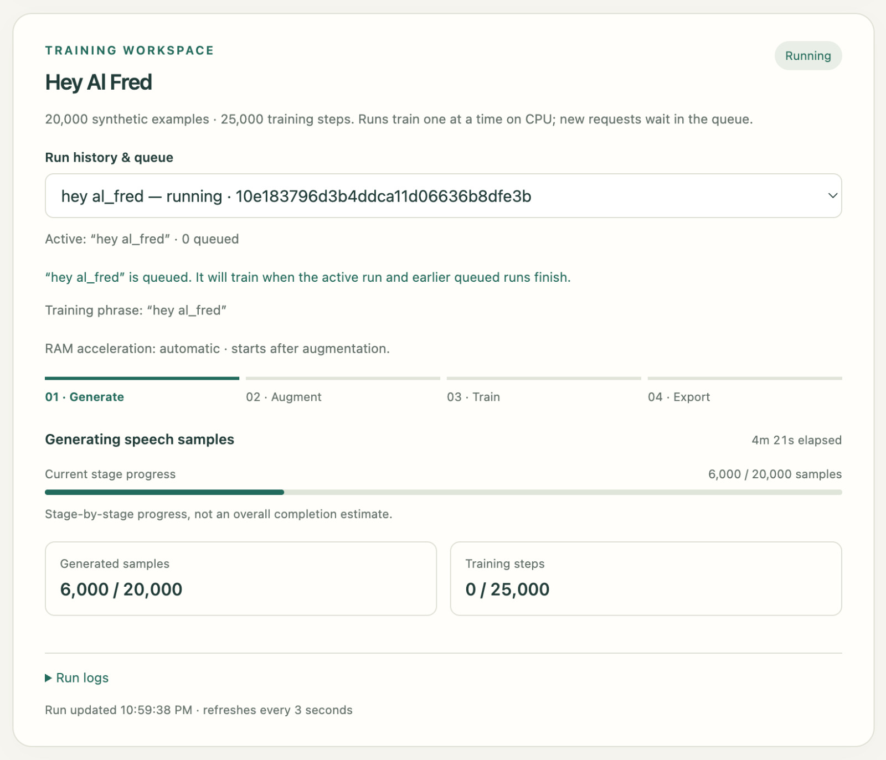

Local Voice Routines with an Old Amazon Echo Dot and Home Assistant
October 4, 2026
I wanted a local alternative to cloud assistants like Google Home and Alexa. Since I had a few second gen Echo Dots lying around and I was already running Home Assistant on a Raspberry Pi, I decided to look into it.

Flashing the Echo Dot
I found EchoLocal, a project that replaces Amazon’s services on a second-generation Echo Dot. It runs on the Dot and speaks the ESPHome native API, so Home Assistant discovers it as an ESPHome device (the Dot is not ESPHome based, but EchoLocal implements the protocol that lets it fit into the same Home Assistant integration.)
I flashed one of the Dots and connected it to Home Assistant. EchoLocal already supported local wake word detection with openWakeWord and microWakeWord models.

Speech-to-text and text-to-speech
Once it was connected, I still needed speech-to-text for the commands and text-to-speech for the replies.
I could use Google text-to-speech, but I wanted to keep this local. Speech recognition looked too heavy for my Raspberry Pi setup. I also looked into Speech-to-Phrase, which recognizes a set of commands using Home Assistant device and area names. That still felt like too much for the few routines I wanted.
Most of the time, I just want to say “Alfred, lights on,” “Alfred, lights off,” or “Alfred, good night” and trigger a routine. So I decided to train a wake word model for each of those phrases.
Adding automation slots
EchoLocal had two wake word slots, one per assistant. When a wake word was detected, it would start Home Assistant’s voice assistant.
I patched my copy to add three automation slots, each with its own wake word model and sensitivity. When a phrase is detected, EchoLocal sends an event to Home Assistant without starting Assist. The Dot can still play a tone and light up its ring.
Home Assistant then runs an automation for that event. No transcription or spoken reply is needed.
The event, esphome.echolocal_wake_word, includes the model ID, phrase, and slot. I can match model: alfred_lights_off in an automation to turn off the lights, or alfred_good_night to run a bedtime routine.
It sends an event every time the phrase is detected, even if I repeat the same command. Just watching the “last wake word” sensor would miss that, since its value would not change.
I can also disable both assistant slots and leave only the automation slots running.
Training the phrases on Replit
EchoLocal comes with three built-in wake word models, but I wanted to use the name Alfred, so I decided to train my own. You can find the models in my EchoLocal fork.
To train the microWakeWord models, I built a small Replit app based on gtjoseph’s microwakeword-cli-trainer. I type a phrase, listen to a generated sample to check the pronunciation, then start training.

For the training phase, the app generates the samples, augments them, trains the model, and exports it. I used 20,000 synthetic examples and 25,000 training steps.

Training runs on CPU, one job at a time. Other jobs wait in a queue, and I can check the progress and logs in the app.
Once training is done, I install the model on the Dot, where it runs locally.
Using it
I’ve added models for Lights On, Lights Off, and Good Night. I can select which model to use in each automation slot.
Each active model uses some CPU on the Dot, so I can’t keep adding phrases without checking the load. I also still need to test missed detections and false triggers in everyday use.